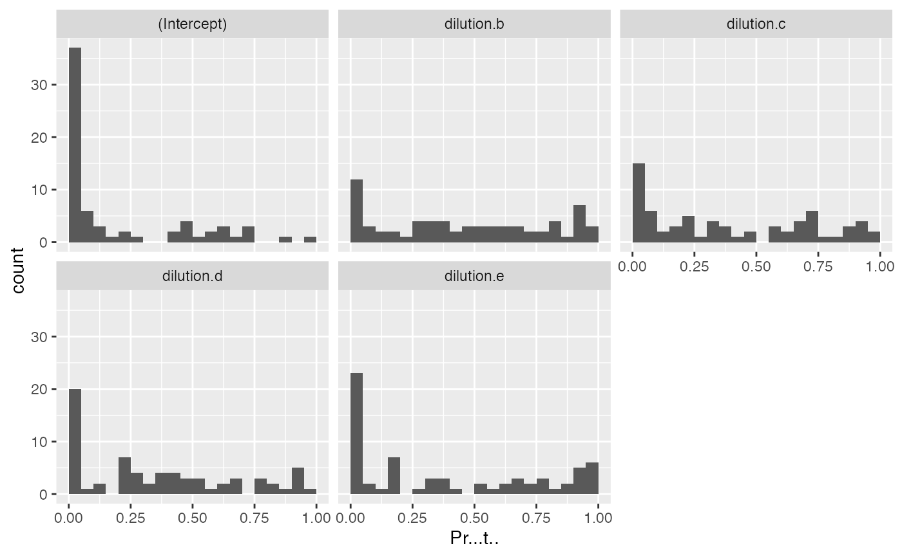
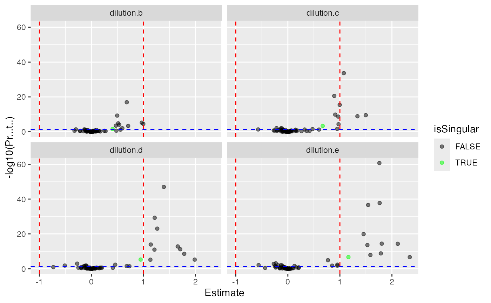

R6 class representing modelling result
R6 class representing modelling result
See also
Other modelling:
ContrastsInterface,
ContrastsROPECA,
ContrastsSaintExpress,
ContrastsTable,
Contrasts_Plotter,
Contrasts_proDA,
INTERNAL_FUNCTIONS_BY_FAMILY,
LR_test(),
build_model(),
get_complete_model_fit(),
get_imputed_contrasts(),
get_model_coefficients(),
get_p_values_pbeta(),
isSingular_lm(),
linfct_all_possible_contrasts(),
linfct_factors_contrasts(),
linfct_from_model(),
linfct_matrix_contrasts(),
modelSummary(),
model_analyse(),
moderated_p_limma_long(),
moderated_p_limma(),
my_contest(),
my_contrast_V1(),
my_contrast_V2(),
my_contrast(),
my_glht(),
pivot_model_contrasts_2_Wide(),
plot_lmer_model_and_data_TWO(),
plot_lmer_model_and_data(),
plot_lmer_peptide_noRandom_TWO(),
plot_lmer_peptide_noRandom(),
plot_lmer_peptide_predictions(),
plot_lmer_predicted_interactions(),
strategy_lmer(),
summary_ROPECA_median_p.scaled()
Super class
prolfqua::ModelInterface -> Model
Public fields
modelDFdata.frame with modelling data and model.
modelNamename of model
subject_Ide.g. protein_Id
modelFunctionfunction to create the models
p.adjustfunction to adjust p-values
Methods
Inherited methods
Method new()
initialize
Usage
Model$new(
modelDF,
modelFunction,
modelName,
subject_Id = "protein_Id",
p.adjust = prolfqua::adjust_p_values
)Arguments
modelDFdataframe with modelling results
modelFunctionmodelFunction see
strategy_lmermodelNamename of model
subject_Idsubject column name
p.adjustmethod to adjust p-values
Method write_coefficients()
writes model coefficients to file
Arguments
pathfolder to write to
formatdefault xlsx
lfq_write_table
Method anova_histogram()
histogram of ANOVA results
Usage
Model$anova_histogram(what = c("Pr..F.", "FDR.Pr..F."))Examples
istar <- prolfqua_data('data_ionstar')$normalized()
istar_data <- dplyr::filter(istar$data ,protein_Id %in% sample(protein_Id, 100))
modelName <- "f_condtion_r_peptide"
formula_randomPeptide <-
strategy_lmer("transformedIntensity ~ dilution. + (1 | peptide_Id)",
model_name = modelName)
pepIntensity <- istar_data
config <- istar$config
config$table$hkeysDepth()
#> [1] "protein_Id"
mod <- prolfqua::build_model(
pepIntensity,
formula_randomPeptide,
modelName = modelName,
subject_Id = config$table$hkeysDepth())
#> boundary (singular) fit: see help('isSingular')
#> Joining, by = "protein_Id"
mod$modelDF
#> # A tibble: 62 × 9
#> # Groups: protein_Id [62]
#> protein_Id data linear_model exists_lmer isSingular df.residual sigma
#> <chr> <list> <list> <lgl> <lgl> <dbl> <dbl>
#> 1 sp|P21589|5NT… <tibble> <lmrMdLmT> TRUE FALSE 276 0.298
#> 2 sp|P0AC84|GLO… <tibble> <lmrMdLmT> TRUE FALSE 20 0.301
#> 3 sp|Q9Y3A5|SBD… <tibble> <lmrMdLmT> TRUE FALSE 172 0.287
#> 4 sp|Q9NZM5|NOP… <tibble> <lmrMdLmT> TRUE FALSE 19 0.845
#> 5 sp|Q13838|DX3… <tibble> <lmrMdLmT> TRUE FALSE 199 0.305
#> 6 sp|O00148|DX3… <tibble> <lmrMdLmT> TRUE FALSE 178 0.338
#> 7 sp|P07602|SAP… <tibble> <lmrMdLmT> TRUE FALSE 202 0.357
#> 8 sp|P04150|GCR… <tibble> <lmrMdLmT> TRUE FALSE 61 0.311
#> 9 sp|Q07866|KLC… <tibble> <lmrMdLmT> TRUE FALSE 154 0.372
#> 10 sp|P41252|SYI… <tibble> <lmrMdLmT> TRUE FALSE 508 0.299
#> # … with 52 more rows, and 2 more variables: nrcoef <int>, nrcoeff_not_NA <int>
aovtable <- mod$get_anova()
head(aovtable)
#> # A tibble: 6 × 11
#> protein_Id isSingular nrcoef factor Sum.Sq Mean.Sq NumDF DenDF F.value Pr..F.
#> <chr> <lgl> <int> <chr> <dbl> <dbl> <int> <dbl> <dbl> <dbl>
#> 1 sp|P21589… FALSE 5 dilut… 0.917 0.229 4 263. 2.58 3.80e-2
#> 2 sp|P0AC84… FALSE 5 dilut… 6.66 1.66 4 20.3 18.3 1.61e-6
#> 3 sp|Q9Y3A5… FALSE 5 dilut… 0.329 0.0822 4 164. 1.00 4.08e-1
#> 4 sp|Q9NZM5… FALSE 5 dilut… 1.59 0.397 4 19.0 0.557 6.96e-1
#> 5 sp|Q13838… FALSE 5 dilut… 0.146 0.0366 4 191. 0.394 8.12e-1
#> 6 sp|O00148… FALSE 5 dilut… 0.842 0.210 4 170. 1.84 1.24e-1
#> # … with 1 more variable: FDR.Pr..F. <dbl>
unique(aovtable$factor)
#> [1] "dilution."
mod$get_coefficients()
#> # A tibble: 310 × 9
#> # Groups: protein_Id [62]
#> protein_Id isSingular nrcoef factor Estimate Std..Error df t.value
#> <chr> <lgl> <int> <chr> <dbl> <dbl> <dbl> <dbl>
#> 1 sp|P21589|5NTD_H… FALSE 5 (Inte… 0.883 0.358 15.3 2.47
#> 2 sp|P21589|5NTD_H… FALSE 5 dilut… 0.0975 0.0559 263. 1.74
#> 3 sp|P21589|5NTD_H… FALSE 5 dilut… 0.0700 0.0557 263. 1.26
#> 4 sp|P21589|5NTD_H… FALSE 5 dilut… -0.0232 0.0564 263. -0.412
#> 5 sp|P21589|5NTD_H… FALSE 5 dilut… 0.127 0.0557 263. 2.27
#> 6 sp|P0AC84|GLO2_E… FALSE 5 (Inte… -2.93 0.303 4.71 -9.66
#> 7 sp|P0AC84|GLO2_E… FALSE 5 dilut… 0.391 0.233 20.2 1.68
#> 8 sp|P0AC84|GLO2_E… FALSE 5 dilut… 1.02 0.223 20.2 4.57
#> 9 sp|P0AC84|GLO2_E… FALSE 5 dilut… 1.23 0.228 20.3 5.40
#> 10 sp|P0AC84|GLO2_E… FALSE 5 dilut… 1.56 0.213 20.5 7.32
#> # … with 300 more rows, and 1 more variable: Pr...t.. <dbl>
mod$coef_histogram()
#> $plot

#>
#> $name
#> [1] "Coef_Histogram_f_condtion_r_peptide.pdf"
#>
mod$coef_volcano()
#> $plot

#>
#> $name
#> [1] "Coef_VolcanoPlot_f_condtion_r_peptide.pdf"
#>
mod$coef_pairs()
#> $plot
#> # A tibble: 62 × 6
#> subject_Id `(Intercept)` dilution.b dilution.c dilution.d dilution.e
#> <chr> <dbl> <dbl> <dbl> <dbl> <dbl>
#> 1 CON__P02769~18~NA 3.09 -0.0540 -0.128 -0.0950 -0.131
#> 2 CON__P34955~32~NA 2.55 -0.000279 -0.0739 -0.0457 0.00263
#> 3 sp|O00148|DX39A_HU… 1.34 0.0791 0.146 0.0983 -0.0395
#> 4 sp|O15145|ARPC3_HU… 2.55 -0.0453 -0.170 -0.0143 -0.350
#> 5 sp|O15511|ARPC5_HU… 1.33 -0.0551 -0.0265 -0.118 -0.0677
#> 6 sp|O60645|EXOC3_HU… -1.48 -0.0114 0.0791 0.0765 0.0170
#> 7 sp|O75436|VP26A_HU… -0.588 0.00821 0.0217 -0.0226 -0.133
#> 8 sp|O95373|IPO7_HUM… 0.846 -0.0427 -0.0121 -0.0408 -0.0913
#> 9 sp|P00505|AATM_HUM… 0.0930 -0.134 0.0300 -0.132 -0.0597
#> 10 sp|P02924|ARAF_ECO… -2.18 0.772 1.08 1.48 1.67
#> # … with 52 more rows
#>
#> $name
#> [1] "Coef_Pairsplot_f_condtion_r_peptide.pdf"
#>
mod$anova_histogram()
#> $plot
 #>
#> $name
#> [1] "Anova_p.values_f_condtion_r_peptide.pdf"
#>
#>
#> $name
#> [1] "Anova_p.values_f_condtion_r_peptide.pdf"
#>